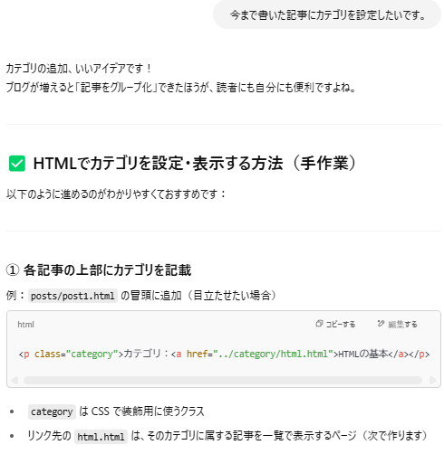
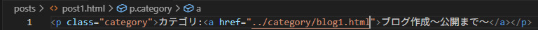
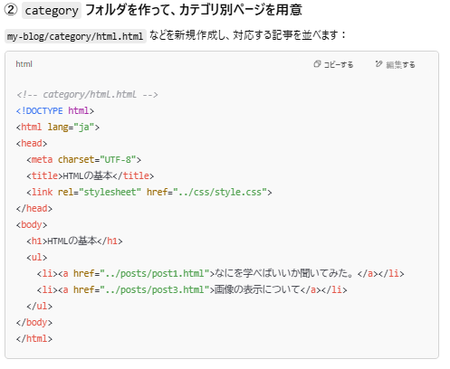
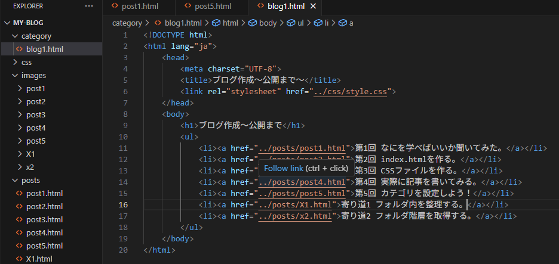
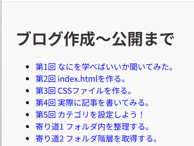
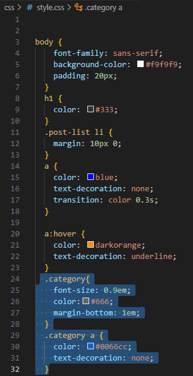
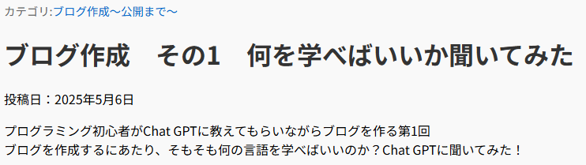
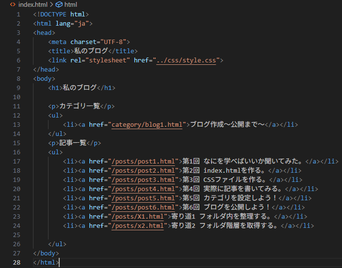

カテゴリ:ブログ作成～公開まで～
投稿日：2025年5月10日
さてさて第5回。ブログもそれっぽくなってきた今日このごろ。
今回は「カテゴリ」を設定して、記事を見やすく整理していきます！
…と言っても、まだ記事数は片手で足りちゃうくらい。でも未来の私が「過去の私グッジョブ！」って思ってくれるはず。
ということで、恒例の“とりあえずChat GPTに聞いてみよう”タイム、始まります。
各記事の上部にカテゴリのクラスを設定するようです。
試しにpost1に設定します。ブログ作成～公開まで～ にしておきます！
次はcategoryフォルダを作り、カテゴリごとにHTMLファイルを作るみたいです。
カテゴリフォルダを作成し、その中にHTMLファイルを作成。
そのファイルの中にコードを打ち込み、リストを作りました。
カテゴリのHTMLファイルを開いてみましょう！
おお！！！いいかんじ！！！
今はHTML全体に設定しているCSSスタイルが適用されていますが、
Chat GPTがカテゴリへのCSS適用を任意で提案してくれているのでやってみましょう！
style.cssにコードを打ち込んでみます。
するとどうでしょう。
うおおお！！ページ上部にカテゴリが表示されました！
ついでにトップページにもカテゴリを表示します。index.htmlを開いて
カテゴリ一覧のリストを作成。ついでに記事一覧のリストも作成し、今までの記事のリンクを貼りました。
index.htmlを開いてみます。
なんかブログの一番下の部分、こんな感じですね！
うまくいったので置き換えを使って他のページにも適用します。
<!DOCTYPE>を検索して、置き換え後をカテゴリ設定するタグにして、最後に<!DOCTYPE>も含めれば文頭に追加できます！
無事カテゴリを設定できたので今回はここまで！
カテゴリ:ブログ作成～公開まで～